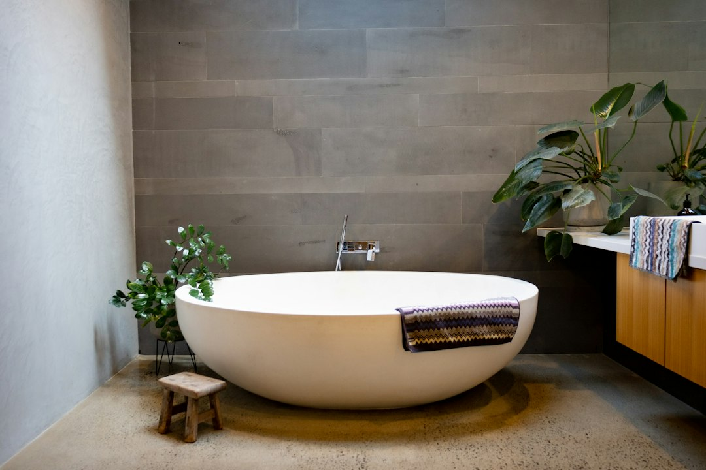

A full Melbourne bathroom renovation is described by the source as about $8,000 to $35,000, with recent HIA data putting the Australian average around $26,000. The main cost drivers named are room size, layout changes, fixture and finish quality, labour, waterproofing, plumbing and electrical work. For apartments, terraces, compact bathrooms and premium family homes, the useful first step is a written scope that deals with access, compliance and layout before prices are compared.
For Melbourne homeowners comparing bathroom renovations melbourne options, the practical starting point is the room type, building constraints, waterproofing scope and the decisions that will shape a quote.
Bathroom Renovations Melbourne Explained
Melbourne Bathroom Renovations frames the first conversation around suburb, bathroom type, rough scope, layout changes and any access or approval complication. That is a useful editorial lens because a bathroom can look simple on a wish list while the building details decide the real work.
The source separates complete renovations, ensuite upgrades, small bathroom remodels, apartment wet areas, waterproofing and tiling, accessibility work, and linked laundry or powder-room work. Those categories should not be treated as decorative labels. They help a homeowner say whether the problem is a tired room, a leaking or impractical room, a cramped ensuite, a compact floor plan, or a building approval issue.
A better quote request starts with facts a contractor can test: whether the layout stays or changes, what frustrates you now, whether plumbing or electrical scope is likely, and whether the property has apartment access or owners-corporation constraints. That gives the quoting contractor a chance to put assumptions and exclusions in writing before work starts.
Who this applies to
This guide applies to Melbourne homeowners planning a full bathroom redesign, an ensuite upgrade, a small bathroom remodel, an apartment bathroom, or a wet-area repair that may become a larger renovation. It is especially relevant where the room is compact, dated, leaking, awkward to use, or part of a premium family home where finish quality and practical layout need to be considered together.
- Apartment owners should ask early about access, approval requirements and how wet-area work will be scoped.
- Terrace and narrow-floor-plan owners should focus on clearances, storage, ventilation and whether the layout is doing too much in too little space.
- Family-home renovators should separate durability, storage and fit-off decisions from purely visual selections.
- Premium rebuild clients should ask how tile, tapware, stone and finish choices affect both budget and sequencing.
The same topic is also mirrored in this parallel Melbourne bathroom planning note, which keeps the crawl path focused on the same renovation question.
Cost signals worth isolating
The source gives a Melbourne range of about $8,000 to $35,000 for a full renovation, with premium custom designs able to exceed $35,000. It also cites recent Housing Industry Association data putting the average Australian bathroom renovation spend around $26,000. Those figures are useful as a broad anchor, not as a substitute for a room-specific quote.
Three cost signals deserve early attention. First, layout changes can move the project away from a finish refresh and into plumbing, electrical and waterproofing decisions. Second, labour is described as a large share of the total where those trades are involved. Third, fixture and finish quality can move a project from the lower end of the range toward custom work with premium tiles, stone benchtops and high-end tapware.
Before comparing prices, ask each contractor what has been assumed about demolition, waterproofing, tiling, fit-off, exclusions and quote validity. A cheaper number is not automatically worse, but it should be easy to see what is included and what will be priced later.
Apartment, ensuite and compact-room questions
A South Yarra apartment bathroom with owners-corporation friction is described as a different job from a Glen Waverley family ensuite or a Brighton premium full-bathroom rebuild. That example is helpful because it shows why locality should be tied to property type and approval context, not just suburb names.
For an apartment wet area, ask how access, building rules and approval steps will affect the quote discussion. For an ensuite, the source points to cramped, dark or dated rooms that may need storage, ventilation and a better layout. For small bathrooms in terraces, apartments and narrow floor plans, every clearance matters because poor placement can make the finished room harder to use even when the finishes look new.
Useful questions include: what must stay where it is, what can move, where storage can be added without blocking movement, and whether ventilation is being treated as part of the design. These questions do not require a homeowner to solve the design. They help a contractor respond to the actual constraints.
Scope before selections
The source repeatedly puts wet-area compliance, layout efficiency and finish quality inside one scope. That order matters. Choosing tiles, tapware and cabinetry before the room constraints are tested can hide the harder decisions about waterproofing, plumbing, electrical work and access.
A written scope should describe the room, the intended outcome, the major work stages and the assumptions behind the quote. It should also make exclusions visible. If the project is a complete renovation, demolition, waterproofing, tiling and fit-off should not be left as vague headings. If it is mainly an ensuite or compact-room redesign, the scope should show how storage, ventilation and clearances are being handled.
ASIC Moneysmart's renovating guidance is a useful reminder to plan the budget before committing. In practical terms, that means treating the quote as a decision document, not just a price. The more clearly the scope names what is included, the easier it is to compare contractors on the same job.
- Define the room. Write down the bathroom type, suburb or postcode, current problem and whether the layout should change.
- Separate constraints. List access, apartment, owners-corporation, waterproofing, plumbing or electrical issues before choosing finishes.
- Request written scope. Ask the quoting contractor to document inclusions, exclusions and assumptions before you commit.
- Compare like with like. Use the same room facts and desired outcome when reviewing renovation prices.
| Project situation | Main scope question | Useful quote input |
|---|---|---|
| Complete renovation | Is this a full redesign with demolition, waterproofing, tiling and fit-off? | Describe what is tired, leaking or impractical and whether the layout changes. |
| Ensuite upgrade | Does a cramped, dark or dated room need better storage, ventilation and layout? | Share the current pain points and any must-keep fixture positions. |
| Small bathroom | Are clearances and access the limiting issue? | Measure the room and note doors, windows, storage needs and narrow access. |
| Apartment wet area | Will access or owners-corporation requirements affect the project? | Raise building approval, access and strata questions before selections. |
Common questions
How much should I allow for a Melbourne bathroom renovation? The source cites about $8,000 to $35,000 for a full renovation, with premium custom work able to exceed $35,000. The cited Australian average is around $26,000, but the room size, layout changes and finish choices still drive the actual quote.
Why can two bathroom quotes look very different? Quotes can differ because contractors may assume different work for waterproofing, plumbing, electrical scope, demolition, tiling, fit-off, exclusions and finishes. A written scope makes those assumptions easier to compare.
What should apartment owners ask before requesting a quote? They should raise access, approval and owners-corporation issues early. The source specifically treats apartment wet areas as a different scoping problem from family ensuites or premium full rebuilds.
Is a small bathroom automatically a cheaper project? Not necessarily. The source notes that small bathrooms in terraces, apartments and narrow floor plans need space-smart planning where every clearance matters, so layout efficiency can be as important as the room size.
This guide covers Melbourne bathroom planning, scope, cost signals, room constraints and quote questions for homeowners.